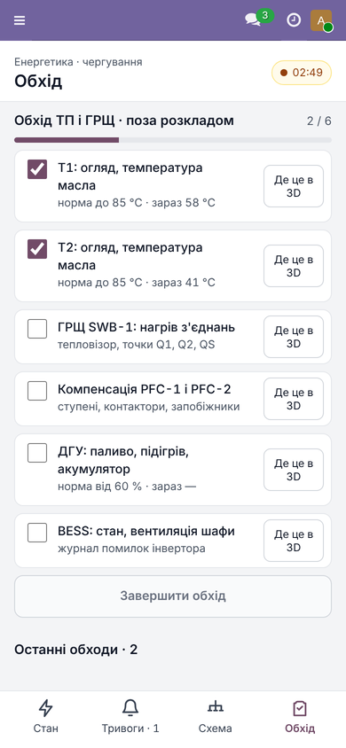

Adds a Rounds tab to the mobile screen of the duty energy engineer: checklists for substations and switchboards, a round journal and events for deviations.

Rounds tab on a phone
td_energy).Part of the Factory 3D suite for Odoo 19. Questions and support requests: support@todo.ltd